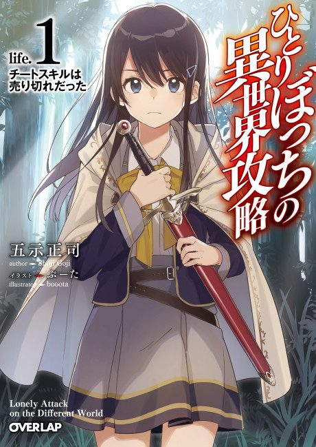

Loner Life in Another World
ひとりぼっちの異世界攻略
Haruka, a high school loner, is summoned to another world with his class, but by the time he gets to pick his skills, only the leftovers remain.
After the anime, read the light novel from Volume 5.
6.5AniList score
—Animeter, no votes yet
12episodes
Rate it or report where you stopped
Anime finished. Where does the story go next?
Start at Volume5
The anime ends at the end of light novel volume 4, so start at volume 5.
14ongoing
Season 1Start reading here
More like Loner Life in Another World
 Manga Ch. 347.6
Manga Ch. 347.6
 Manga Vol. 157.6
Manga Vol. 157.6
 Unclear7.6
Unclear7.6
 Manga Vol. 47.7
Manga Vol. 47.7
 Manga Vol. 58.1
Manga Vol. 58.1
 Manga Vol. 77.0
Manga Vol. 77.0
 Unclear7.0
Unclear7.0
 Manga Vol. 56.9
Manga Vol. 56.9
 Unclear6.8
Unclear6.8
 Manga Vol. 116.5
Manga Vol. 116.5
 Manga Vol. 117.7
Manga Vol. 117.7
 Manga Ch. 1118.0
Manga Ch. 1118.0